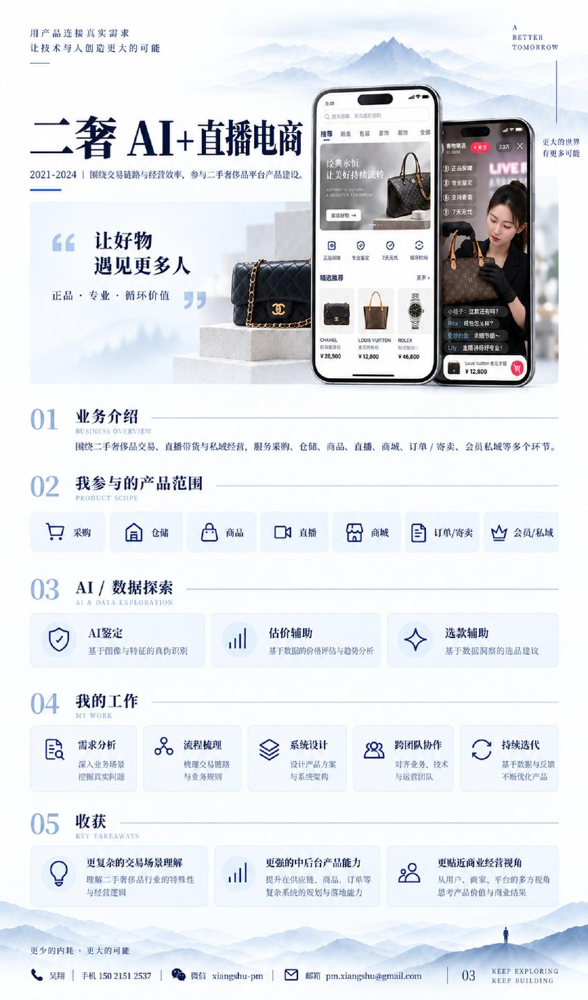
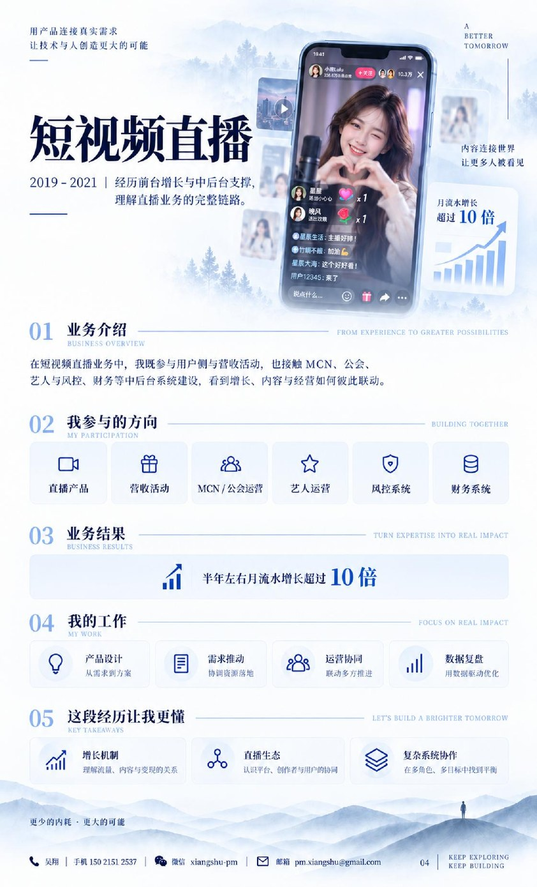
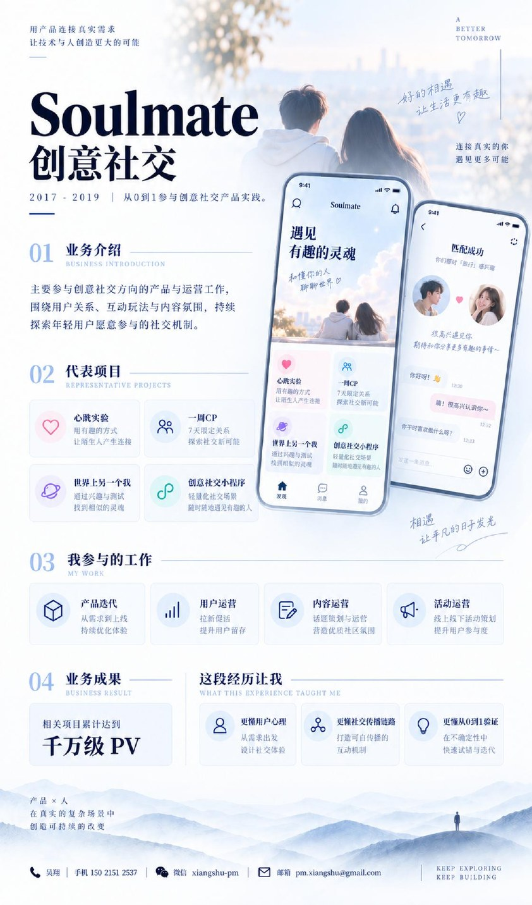
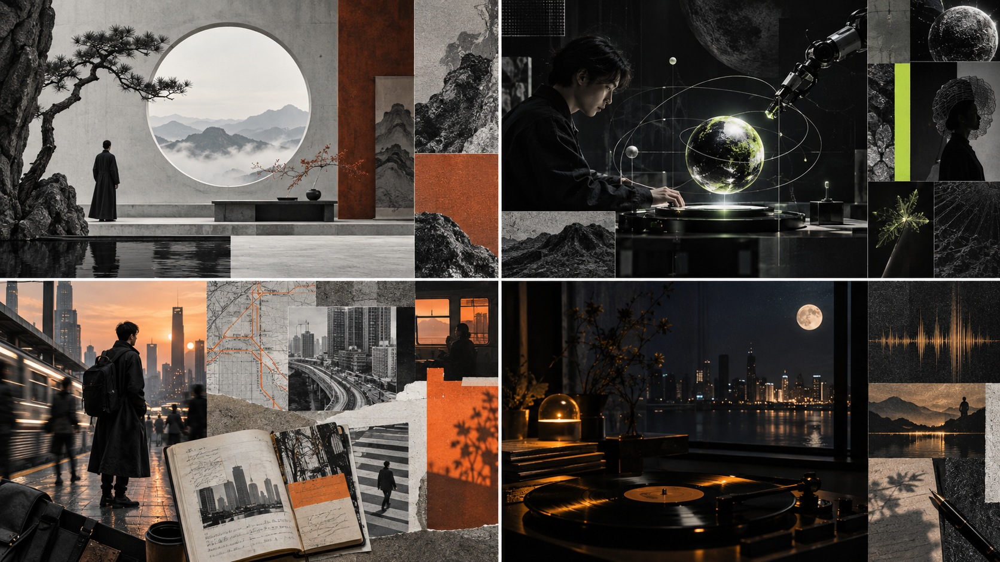

解忧小屋AI × INNER GROWTH / 001
8 年互联网产品与运营实践
0 → 1从想法到产品与业务落地
千万级 PV创意社交活动项目累计表现
10+直播业务半年月流水增长
01 / MORE THAN A TITLE
我不太想把自己塞进一个标准的职业标签里。
真正让我着迷的，是那些看似无关的领域，彼此相遇时产生的新可能。
01.用产品思维
用产品思维
发现问题背后的结构
8 年以上产品、运营与商业实践，擅长从混乱场景中找到关键问题，把抽象需求转化为可执行的产品与流程。
02.用心理学
用心理学
理解真实而复杂的人
长期关注人格、关系、生命成长与人性。比“快速给答案”更感兴趣的，是一个人为什么会这样想、这样选择。
03.用艺术与哲学
用艺术与哲学
保持感受力和想象力
喜欢音乐、绘画、东方美学，也持续学习东西方思想。理性负责看清结构，感性负责感知未被说出的部分。
04.用 AI
用 AI
把想法真正做出来
不是只讨论未来，而是动手做 AI 应用、原型、工作流和系统，在真实用户与业务中验证价值。
WHAT I BELIEVE
当机器越来越聪明，
我希望人不是越来越像机器，
而是越来越完整地成为自己。
AI × HUMANITY / 技术的边界，是人的可能性
02 / SELECTED AI WORKS
想法不是用来
收藏的。
是用来创造的。
这些是我最近持续构建的 AI 产品与实践：从心理成长到企业工作台，从 AI 应用诊断到创造力系统。有些已经跑通 MVP，有些还在实验中。
我更想展示探索过程，而不是制造一种“每个项目都已成功”的假象。
ASVA · OSAI × SERVICE OPERATIONS / 002
AI 机会雷达AI × OPPORTUNITY / 003
心力地图AI × SELF EXPLORATION / 004
思想工厂AI × CREATIVE PRACTICE / 005
翔叔 · AI 思想工厂
从用户需求洞察、灵感与知识积累，到选题研究、内容创作及多平台表达，搭建属于个人的思想生产系统。
研究 / 创作 / 自动化个人内部项目
观相实验室AI × EASTERN CULTURE / 006
注：作品阶段为当前公开展示口径；公开仓库仅展示部分代码与实践，不等于正式上线、可直接使用或具有临床效力。
03 / THE ROAD SO FAR
那些年，我在
真实的商业世界里。
AI 之前，我已经在社交、直播、电商和复杂业务系统里摸爬滚打许多年。这些经历让我明白：再好的想法，最终都要接受真实需求、真实协作和真实结果的检验。

二奢交易 × 直播电商
覆盖采购、仓储、商品、订单、商城、寄卖、会员与私域，把复杂的供应链、交易与运营流程连接成系统。
复杂系统全链路产品实践

短视频直播 × 商业化增长
参与直播业务、营收活动、主播与公会体系及风控、财务等运营后台，把增长与系统能力衔接起来。
10×+半年月流水增长

Soulmate × 创意社交
参与「心跳实验」「一周 CP」「世界上另一个我」等创意玩法，研究陌生人之间的表达、互动与真实连接。
千万级 PV品牌活动累计表现
旅行 × 电商 × 内容社区
从内容与社群出发，进入互联网产品的真实现场，学习用户研究、内容运营、交易服务和从 0 到 1 的实践。
起点从理解用户开始
以上为阶段性经历与代表项目的精选摘要；具体职责、成果口径与案例材料可在后续作品档案中持续补充。
04 / HOW I WORK
有好奇心，
也有把事做成的方法。
我偏爱小而美、有生命力、能解决真问题的作品。比起无休止地讨论一个宏大方案，我更喜欢让想法尽快与现实见面。
01
先问对问题
用户真正困扰的是什么？那些被直接表达出来的需求，背后藏着什么？
02
再看见结构
连接人、场景、规则和利益关系，找到真正影响结果的关键环节。
03
动手做出来
用 AI、产品设计与快速原型，把概念变成真实可试用的第一版。
04
让现实来回答
找到真实的人、真实的反馈、真实的使用与付费场景，再复盘迭代。

THE HUMAN BEHIND THE WORK / 创作、探索、生活
05 / A LITTLE MORE PERSONAL
如果你想
再认识我一点。
看起来，我换过很多赛道。
但回头看，我似乎一直在研究同一件事：人。
做社交时，我想知道陌生人如何真正连接。做直播时，我想知道内容、情绪与商业如何相互作用。做交易系统时，我开始理解信任、价格和协作。后来接触心理成长、艺术疗愈与东方思想，我把目光从「一个人使用什么产品」转向「一个人如何认识和成为自己」。
AI 的出现，又让我重新兴奋起来：许多过去只能停留在笔记本上的构想，现在可以被迅速做成可以触摸、可以试用的作品。
我喜欢深度谈话，也喜欢安静地思考；喜欢远方、新鲜体验和不按常规出牌的创意；也享受把复杂问题慢慢想透、再把它变简单的过程。
我没有兴趣扮演一个什么都想明白了的人。我更愿意做一个持续学习、持续创造的人，与有趣的人一道，去经历真实而鲜活的世界。
我希望此生留下的，不只是完成过多少项目，而是一些真正让人眼睛一亮、心里一动的作品。
心理学与人的成长AI 与未来文明东方智慧音乐与艺术深度对话自由探索
Think it. Build it. Share it.